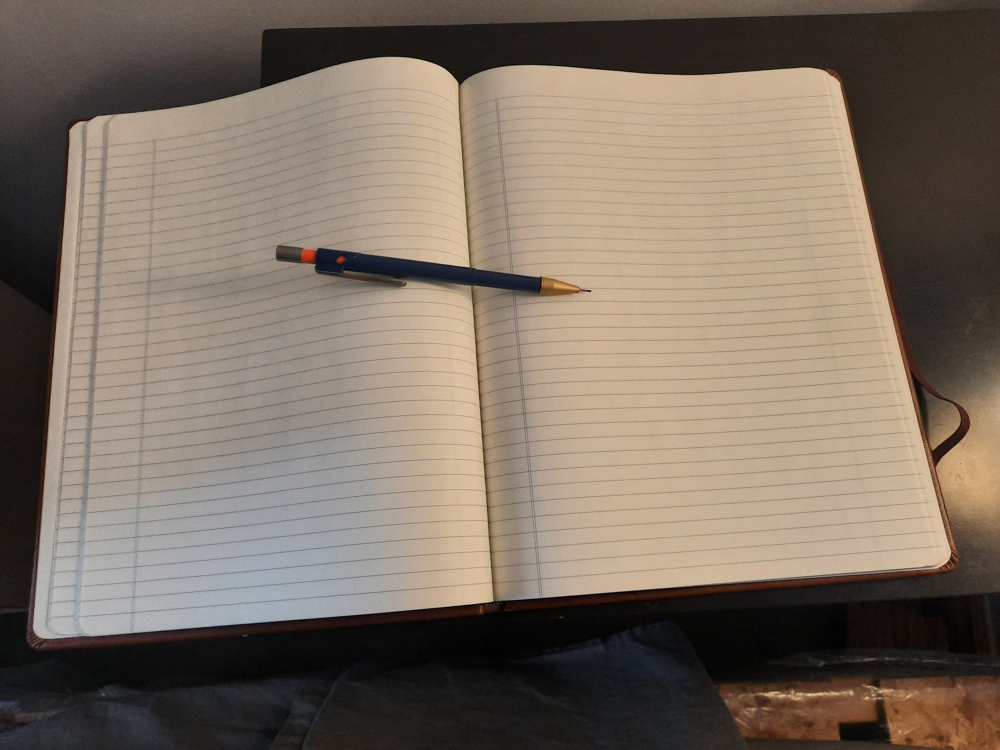

Fiction Writing
Below are some of the drafts I have written for fiction stories. None of these stories are final drafts in my mind, but they are completed drafts. While these may not be the final draft, or up to the quality level that I want it to be, they are completed in some kind of way. Some of these stories are things I wrote when I was a high-schooler, and some of the stories are recently written, but story ideas that I had come up with when I was younger.
As I add more stories you will see that some of these are only parts of a larger series, for example a sample chapter from a planned book, as the stories I write do not tend to be written in the sequential order. There will be some stories that are completely standalone, or sometimes they will be standalone stories that are possibly connected to other stories. This is due to the love for the Fantasy genre and my love for creating a fiction world.
The Stone Tiger (Short Story)
In this short story we see how an individual who mysteriously goes to a new, rural environment can act. The themes of the story are delusion, arrogance, denial and more. This story is inspired by the short horror stories, like stories from Edgar Allan Poe, and Lamb to the Slaughter by Roald Dahl.